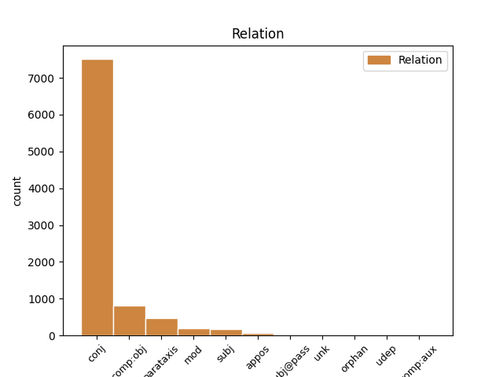
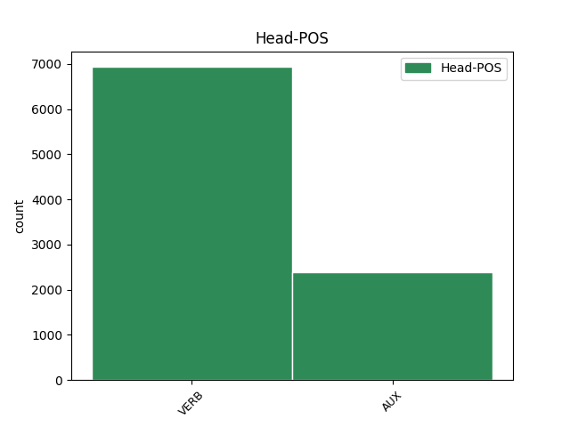

Distribution of features within this leaf


Agreement Rules sorted by frequency.
- When the dependent token is the conjunct(conj) of the head token, and the dependent token is VERB.
1 Teller _ _ _ _ 0 _ _ _
2 se _ _ _ _ 0 _ _ _
3 bránil _ _ _ _ 0 _ _ _
4 charakteristickým _ _ _ _ 0 _ _ _
5 způsobem _ _ _ _ 0 _ _ _
6 : _ _ _ _ 0 _ _ _
7 " _ _ _ _ 0 _ _ _
8 Každý _ _ _ _ 0 _ _ _
9 kojenec _ _ _ _ 0 _ _ _
10 se _ _ _ _ 0 _ _ _
11 dá dát VERB VB-S---3P-AA--- Mood=Ind|Number=Sing|Person=3|Polarity=Pos|Tense=Pres|VerbForm=Fin|Voice=Act 0 _ _ _
12 jednou _ _ _ _ 0 _ _ _
13 zneužít _ _ _ _ 0 _ _ _
14 pro _ _ _ _ 0 _ _ _
15 agresívní _ _ _ _ 0 _ _ _
16 útok _ _ _ _ 0 _ _ _
17 - _ _ _ _ 0 _ _ _
18 znamená znamenat VERB VB-S---3P-AA--- Aspect=Imp|Mood=Ind|Number=Sing|Person=3|Polarity=Pos|Tense=Pres|VerbForm=Fin|Voice=Act 11 conj _ _
19 to _ _ _ _ 0 _ _ _
20 snad _ _ _ _ 0 _ _ _
21 , _ _ _ _ 0 _ _ _
22 že _ _ _ _ 0 _ _ _
23 máme _ _ _ _ 0 _ _ _
24 přestat _ _ _ _ 0 _ _ _
25 s _ _ _ _ 0 _ _ _
26 výrobou _ _ _ _ 0 _ _ _
27 dětí _ _ _ _ 0 _ _ _
28 ? _ _ _ _ 0 _ _ _
29 " _ _ _ _ 0 _ _ _
1 Výpočty _ _ _ _ 0 _ _ _
2 totiž _ _ _ _ 0 _ _ _
3 naznačují _ _ _ _ 0 _ _ _
4 , _ _ _ _ 0 _ _ _
5 že _ _ _ _ 0 _ _ _
6 při _ _ _ _ 0 _ _ _
7 srážce _ _ _ _ 0 _ _ _
8 Země _ _ _ _ 0 _ _ _
9 s _ _ _ _ 0 _ _ _
10 10 _ _ _ _ 0 _ _ _
11 km _ _ _ _ 0 _ _ _
12 planetkou _ _ _ _ 0 _ _ _
13 by být AUX Vc------------- Mood=Cnd|VerbForm=Fin 0 _ _ _
14 bezprostředně _ _ _ _ 0 _ _ _
15 po _ _ _ _ 0 _ _ _
16 dopadu _ _ _ _ 0 _ _ _
17 zahynula _ _ _ _ 0 _ _ _
18 čtvrtina _ _ _ _ 0 _ _ _
19 lidské _ _ _ _ 0 _ _ _
20 populace _ _ _ _ 0 _ _ _
21 a _ _ _ _ 0 _ _ _
22 zbylí _ _ _ _ 0 _ _ _
23 " _ _ _ _ 0 _ _ _
24 živí _ _ _ _ 0 _ _ _
25 by být AUX Vc------------- Mood=Cnd|VerbForm=Fin 13 conj _ _
26 záviděli _ _ _ _ 0 _ _ _
27 mrtvým _ _ _ _ 0 _ _ _
28 " _ _ _ _ 0 _ _ _
29 . _ _ _ _ 0 _ _ _
1 Teorie _ _ _ _ 0 _ _ _
2 vědy _ _ _ _ 0 _ _ _
3 ukazuje ukazovat VERB VB-S---3P-AA--- Aspect=Imp|Mood=Ind|Number=Sing|Person=3|Polarity=Pos|Tense=Pres|VerbForm=Fin|Voice=Act 0 _ _ _
4 , _ _ _ _ 0 _ _ _
5 jak _ _ _ _ 0 _ _ _
6 zdánlivě _ _ _ _ 0 _ _ _
7 odtažitý _ _ _ _ 0 _ _ _
8 subjekt _ _ _ _ 0 _ _ _
9 může moci VERB VB-S---3P-AA--- Mood=Ind|Number=Sing|Person=3|Polarity=Pos|Tense=Pres|VerbForm=Fin|Voice=Act 3 comp:obj _ LGloss=(mít_možnost_[něco_dělat])
10 být _ _ _ _ 0 _ _ _
11 překvapivě _ _ _ _ 0 _ _ _
12 aktuální _ _ _ _ 0 _ _ _
13 pro _ _ _ _ 0 _ _ _
14 lidskou _ _ _ _ 0 _ _ _
15 společnost _ _ _ _ 0 _ _ _
16 na _ _ _ _ 0 _ _ _
17 konci _ _ _ _ 0 _ _ _
18 20 _ _ _ _ 0 _ _ _
19 . _ _ _ _ 0 _ _ _
20 století _ _ _ _ 0 _ _ _
21 . _ _ _ _ 0 _ _ _
1 Manévr _ _ _ _ 0 _ _ _
2 zmenšuje zmenšovat VERB VB-S---3P-AA--- Aspect=Imp|Mood=Ind|Number=Sing|Person=3|Polarity=Pos|Tense=Pres|VerbForm=Fin|Voice=Act 0 _ _ _
3 riziko _ _ _ _ 0 _ _ _
4 rozbití _ _ _ _ 0 _ _ _
5 planetky _ _ _ _ 0 _ _ _
6 na _ _ _ _ 0 _ _ _
7 více _ _ _ _ 0 _ _ _
8 kusů _ _ _ _ 0 _ _ _
9 , _ _ _ _ 0 _ _ _
10 ale _ _ _ _ 0 _ _ _
11 současně _ _ _ _ 0 _ _ _
12 zvyšuje zvyšovat VERB VB-S---3P-AA--- Aspect=Imp|Mood=Ind|Number=Sing|Person=3|Polarity=Pos|Tense=Pres|VerbForm=Fin|Voice=Act 2 parataxis _ _
13 energetickou _ _ _ _ 0 _ _ _
14 náročnost _ _ _ _ 0 _ _ _
15 " _ _ _ _ 0 _ _ _
16 úpravy _ _ _ _ 0 _ _ _
17 " _ _ _ _ 0 _ _ _
18 dráhy _ _ _ _ 0 _ _ _
19 zhruba _ _ _ _ 0 _ _ _
20 o _ _ _ _ 0 _ _ _
21 dva _ _ _ _ 0 _ _ _
22 řády _ _ _ _ 0 _ _ _
23 , _ _ _ _ 0 _ _ _
24 čili _ _ _ _ 0 _ _ _
25 jsme _ _ _ _ 0 _ _ _
26 opět _ _ _ _ 0 _ _ _
27 u _ _ _ _ 0 _ _ _
28 100 _ _ _ _ 0 _ _ _
29 Mt _ _ _ _ 0 _ _ _
30 TNT _ _ _ _ 0 _ _ _
31 ! _ _ _ _ 0 _ _ _
1 Sám _ _ _ _ 0 _ _ _
2 Popper _ _ _ _ 0 _ _ _
3 flirtuje _ _ _ _ 0 _ _ _
4 s _ _ _ _ 0 _ _ _
5 metafyzikou _ _ _ _ 0 _ _ _
6 , _ _ _ _ 0 _ _ _
7 když _ _ _ _ 0 _ _ _
8 tvrdí tvrdit VERB VB-S---3P-AA--- Aspect=Imp|Mood=Ind|Number=Sing|Person=3|Polarity=Pos|Tense=Pres|VerbForm=Fin|Voice=Act 0 _ _ _
9 : _ _ _ _ 0 _ _ _
10 " _ _ _ _ 0 _ _ _
11 Vědecký _ _ _ _ 0 _ _ _
12 objev _ _ _ _ 0 _ _ _
13 je být AUX VB-S---3P-AA--- Mood=Ind|Number=Sing|Person=3|Polarity=Pos|Tense=Pres|VerbForm=Fin|Voice=Act 8 comp:obj _ _
14 nemožný _ _ _ _ 0 _ _ _
15 bez _ _ _ _ 0 _ _ _
16 víry _ _ _ _ 0 _ _ _
17 v _ _ _ _ 0 _ _ _
18 myšlenky _ _ _ _ 0 _ _ _
19 čistě _ _ _ _ 0 _ _ _
20 spekulativní _ _ _ _ 0 _ _ _
21 povahy _ _ _ _ 0 _ _ _
22 . _ _ _ _ 0 _ _ _
23 . _ _ _ _ 0 _ _ _
24 . _ _ _ _ 0 _ _ _
25 víry _ _ _ _ 0 _ _ _
26 , _ _ _ _ 0 _ _ _
27 která _ _ _ _ 0 _ _ _
28 je _ _ _ _ 0 _ _ _
29 zcela _ _ _ _ 0 _ _ _
30 nepodložená _ _ _ _ 0 _ _ _
31 z _ _ _ _ 0 _ _ _
32 hlediska _ _ _ _ 0 _ _ _
33 vědy _ _ _ _ 0 _ _ _
34 , _ _ _ _ 0 _ _ _
35 a _ _ _ _ 0 _ _ _
36 je _ _ _ _ 0 _ _ _
37 proto _ _ _ _ 0 _ _ _
38 , _ _ _ _ 0 _ _ _
39 do _ _ _ _ 0 _ _ _
40 jisté _ _ _ _ 0 _ _ _
41 míry _ _ _ _ 0 _ _ _
42 , _ _ _ _ 0 _ _ _
43 " _ _ _ _ 0 _ _ _
44 metafyzická _ _ _ _ 0 _ _ _
45 " _ _ _ _ 0 _ _ _
46 . _ _ _ _ 0 _ _ _
1 Oči _ _ _ _ 0 _ _ _
2 proto _ _ _ _ 0 _ _ _
3 , _ _ _ _ 0 _ _ _
4 že _ _ _ _ 0 _ _ _
5 nadbytek _ _ _ _ 0 _ _ _
6 kyslíku _ _ _ _ 0 _ _ _
7 při _ _ _ _ 0 _ _ _
8 oživování _ _ _ _ 0 _ _ _
9 novorozenců _ _ _ _ 0 _ _ _
10 brzdí brzdit VERB VB-S---3P-AA--- Aspect=Imp|Mood=Ind|Number=Sing|Person=3|Polarity=Pos|Tense=Pres|VerbForm=Fin|Voice=Act 0 _ _ _
11 vývoj _ _ _ _ 0 _ _ _
12 cév _ _ _ _ 0 _ _ _
13 v _ _ _ _ 0 _ _ _
14 sítnici _ _ _ _ 0 _ _ _
15 oka _ _ _ _ 0 _ _ _
16 : _ _ _ _ 0 _ _ _
17 cévy _ _ _ _ 0 _ _ _
18 se _ _ _ _ 0 _ _ _
19 nemusí muset VERB VB-P---3P-NA--1 Mood=Ind|Number=Plur|Person=3|Polarity=Neg|Tense=Pres|VerbForm=Fin|Voice=Act 10 mod _ _
20 tolik _ _ _ _ 0 _ _ _
21 tvořit _ _ _ _ 0 _ _ _
22 , _ _ _ _ 0 _ _ _
23 aby _ _ _ _ 0 _ _ _
24 by _ _ _ _ 0 _ _ _
25 prokrvení _ _ _ _ 0 _ _ _
26 sítnice _ _ _ _ 0 _ _ _
27 zajistily _ _ _ _ 0 _ _ _
28 . _ _ _ _ 0 _ _ _
1 Každého _ _ _ _ 0 _ _ _
2 asi _ _ _ _ 0 _ _ _
3 napadne napadnout VERB VB-S---3P-AA--- Aspect=Perf|Mood=Ind|Number=Sing|Person=3|Polarity=Pos|Tense=Pres|VerbForm=Fin|Voice=Act 0 _ _ _
4 : _ _ _ _ 0 _ _ _
5 jak _ _ _ _ 0 _ _ _
6 vzniká vznikat VERB VB-S---3P-AA--- Aspect=Imp|Mood=Ind|Number=Sing|Person=3|Polarity=Pos|Tense=Pres|VerbForm=Fin|Voice=Act 3 subj _ _
7 věda _ _ _ _ 0 _ _ _
8 , _ _ _ _ 0 _ _ _
9 je _ _ _ _ 0 _ _ _
10 - _ _ _ _ 0 _ _ _
11 li _ _ _ _ 0 _ _ _
12 metoda _ _ _ _ 0 _ _ _
13 indukce _ _ _ _ 0 _ _ _
14 zavržena _ _ _ _ 0 _ _ _
15 ? _ _ _ _ 0 _ _ _
1 Protože _ _ _ _ 0 _ _ _
2 v _ _ _ _ 0 _ _ _
3 moderní _ _ _ _ 0 _ _ _
4 industriální _ _ _ _ 0 _ _ _
5 společnosti _ _ _ _ 0 _ _ _
6 ( _ _ _ _ 0 _ _ _
7 alespoň _ _ _ _ 0 _ _ _
8 zatím _ _ _ _ 0 _ _ _
9 ) _ _ _ _ 0 _ _ _
10 převládá _ _ _ _ 0 _ _ _
11 téměř _ _ _ _ 0 _ _ _
12 všeobjímající _ _ _ _ 0 _ _ _
13 rozrůstání _ _ _ _ 0 _ _ _
14 a _ _ _ _ 0 _ _ _
15 zřetězování _ _ _ _ 0 _ _ _
16 ekleziomorfních _ _ _ _ 0 _ _ _
17 struktur _ _ _ _ 0 _ _ _
18 a _ _ _ _ 0 _ _ _
19 jejich _ _ _ _ 0 _ _ _
20 analogií _ _ _ _ 0 _ _ _
21 a _ _ _ _ 0 _ _ _
22 typicky _ _ _ _ 0 _ _ _
23 mužské _ _ _ _ 0 _ _ _
24 vzorce _ _ _ _ 0 _ _ _
25 chování _ _ _ _ 0 _ _ _
26 jsou být AUX VB-P---3P-AA--- Mood=Ind|Number=Plur|Person=3|Polarity=Pos|Tense=Pres|VerbForm=Fin|Voice=Act 0 _ _ _
27 vytlačeny _ _ _ _ 0 _ _ _
28 z _ _ _ _ 0 _ _ _
29 reálného _ _ _ _ 0 _ _ _
30 světa _ _ _ _ 0 _ _ _
31 tak _ _ _ _ 0 _ _ _
32 nanejvýš _ _ _ _ 0 _ _ _
33 do _ _ _ _ 0 _ _ _
34 filmových _ _ _ _ 0 _ _ _
35 seriálů _ _ _ _ 0 _ _ _
36 ( _ _ _ _ 0 _ _ _
37 bojující _ _ _ _ 0 _ _ _
38 armáda _ _ _ _ 0 _ _ _
39 jako _ _ _ _ 0 _ _ _
40 jejich _ _ _ _ 0 _ _ _
41 pokleslá _ _ _ _ 0 _ _ _
42 realizace _ _ _ _ 0 _ _ _
43 je být AUX VB-S---3P-AA--- Mood=Ind|Number=Sing|Person=3|Polarity=Pos|Tense=Pres|VerbForm=Fin|Voice=Act 26 parataxis _ _
44 záležitostí _ _ _ _ 0 _ _ _
45 příliš _ _ _ _ 0 _ _ _
46 riskantní _ _ _ _ 0 _ _ _
47 ) _ _ _ _ 0 _ _ _
48 , _ _ _ _ 0 _ _ _
49 vznáší _ _ _ _ 0 _ _ _
50 se _ _ _ _ 0 _ _ _
51 nezrealizovaná _ _ _ _ 0 _ _ _
52 část _ _ _ _ 0 _ _ _
53 těchto _ _ _ _ 0 _ _ _
54 etologických _ _ _ _ 0 _ _ _
55 úkonů _ _ _ _ 0 _ _ _
56 nad _ _ _ _ 0 _ _ _
57 celou _ _ _ _ 0 _ _ _
58 společností _ _ _ _ 0 _ _ _
59 jako _ _ _ _ 0 _ _ _
60 hustá _ _ _ _ 0 _ _ _
61 mlha _ _ _ _ 0 _ _ _
62 a _ _ _ _ 0 _ _ _
63 vede _ _ _ _ 0 _ _ _
64 celou _ _ _ _ 0 _ _ _
65 společnost _ _ _ _ 0 _ _ _
66 k _ _ _ _ 0 _ _ _
67 jejich _ _ _ _ 0 _ _ _
68 napodobování _ _ _ _ 0 _ _ _
69 . _ _ _ _ 0 _ _ _
1 Manévr _ _ _ _ 0 _ _ _
2 zmenšuje _ _ _ _ 0 _ _ _
3 riziko _ _ _ _ 0 _ _ _
4 rozbití _ _ _ _ 0 _ _ _
5 planetky _ _ _ _ 0 _ _ _
6 na _ _ _ _ 0 _ _ _
7 více _ _ _ _ 0 _ _ _
8 kusů _ _ _ _ 0 _ _ _
9 , _ _ _ _ 0 _ _ _
10 ale _ _ _ _ 0 _ _ _
11 současně _ _ _ _ 0 _ _ _
12 zvyšuje zvyšovat VERB VB-S---3P-AA--- Aspect=Imp|Mood=Ind|Number=Sing|Person=3|Polarity=Pos|Tense=Pres|VerbForm=Fin|Voice=Act 0 _ _ _
13 energetickou _ _ _ _ 0 _ _ _
14 náročnost _ _ _ _ 0 _ _ _
15 " _ _ _ _ 0 _ _ _
16 úpravy _ _ _ _ 0 _ _ _
17 " _ _ _ _ 0 _ _ _
18 dráhy _ _ _ _ 0 _ _ _
19 zhruba _ _ _ _ 0 _ _ _
20 o _ _ _ _ 0 _ _ _
21 dva _ _ _ _ 0 _ _ _
22 řády _ _ _ _ 0 _ _ _
23 , _ _ _ _ 0 _ _ _
24 čili _ _ _ _ 0 _ _ _
25 jsme být VERB VB-P---1P-AA--- Mood=Ind|Number=Plur|Person=1|Polarity=Pos|Tense=Pres|VerbForm=Fin|Voice=Act 12 appos _ _
26 opět _ _ _ _ 0 _ _ _
27 u _ _ _ _ 0 _ _ _
28 100 _ _ _ _ 0 _ _ _
29 Mt _ _ _ _ 0 _ _ _
30 TNT _ _ _ _ 0 _ _ _
31 ! _ _ _ _ 0 _ _ _
1 Tam _ _ _ _ 0 _ _ _
2 , _ _ _ _ 0 _ _ _
3 kde _ _ _ _ 0 _ _ _
4 je být AUX VB-S---3P-AA--- Mood=Ind|Number=Sing|Person=3|Polarity=Pos|Tense=Pres|VerbForm=Fin|Voice=Act 11 mod _ _
5 hustota _ _ _ _ 0 _ _ _
6 okolního _ _ _ _ 0 _ _ _
7 chladného _ _ _ _ 0 _ _ _
8 plynu _ _ _ _ 0 _ _ _
9 nízká _ _ _ _ 0 _ _ _
10 , _ _ _ _ 0 _ _ _
11 nenaráží narážet VERB VB-S---3P-NA--- Aspect=Imp|Mood=Ind|Number=Sing|Person=3|Polarity=Neg|Tense=Pres|VerbForm=Fin|Voice=Act 0 _ _ _
12 rozpínání _ _ _ _ 0 _ _ _
13 na _ _ _ _ 0 _ _ _
14 velký _ _ _ _ 0 _ _ _
15 odpor _ _ _ _ 0 _ _ _
16 . _ _ _ _ 0 _ _ _
1 Nejpozději _ _ _ _ 0 _ _ _
2 od _ _ _ _ 0 _ _ _
3 doby _ _ _ _ 0 _ _ _
4 , _ _ _ _ 0 _ _ _
5 kdy _ _ _ _ 0 _ _ _
6 američtí _ _ _ _ 0 _ _ _
7 astronauté _ _ _ _ 0 _ _ _
8 přivezli _ _ _ _ 0 _ _ _
9 z _ _ _ _ 0 _ _ _
10 Měsíce _ _ _ _ 0 _ _ _
11 vzorky _ _ _ _ 0 _ _ _
12 měsíčních _ _ _ _ 0 _ _ _
13 hornin _ _ _ _ 0 _ _ _
14 , _ _ _ _ 0 _ _ _
15 je být AUX VB-S---3P-AA--- Mood=Ind|Number=Sing|Person=3|Polarity=Pos|Tense=Pres|VerbForm=Fin|Voice=Act 0 _ _ _
16 však _ _ _ _ 0 _ _ _
17 jasno _ _ _ _ 0 _ _ _
18 : _ _ _ _ 0 _ _ _
19 krátery _ _ _ _ 0 _ _ _
20 na _ _ _ _ 0 _ _ _
21 Měsíci _ _ _ _ 0 _ _ _
22 jsou být AUX VB-P---3P-AA--- Mood=Ind|Number=Plur|Person=3|Polarity=Pos|Tense=Pres|VerbForm=Fin|Voice=Act 15 subj _ _
23 impaktního _ _ _ _ 0 _ _ _
24 původu _ _ _ _ 0 _ _ _
25 . _ _ _ _ 0 _ _ _
1 ( _ _ _ _ 0 _ _ _
2 Výraz _ _ _ _ 0 _ _ _
3 smysl _ _ _ _ 0 _ _ _
4 používám _ _ _ _ 0 _ _ _
5 v _ _ _ _ 0 _ _ _
6 tom _ _ _ _ 0 _ _ _
7 významu _ _ _ _ 0 _ _ _
8 , _ _ _ _ 0 _ _ _
9 že _ _ _ _ 0 _ _ _
10 jazykový _ _ _ _ 0 _ _ _
11 výraz _ _ _ _ 0 _ _ _
12 má mít VERB VB-S---3P-AA--- Mood=Ind|Number=Sing|Person=3|Polarity=Pos|Tense=Pres|VerbForm=Fin|Voice=Act 0 _ _ _
13 význam _ _ _ _ 0 _ _ _
14 , _ _ _ _ 0 _ _ _
15 což _ _ _ _ 0 _ _ _
16 je být AUX VB-S---3P-AA--- Mood=Ind|Number=Sing|Person=3|Polarity=Pos|Tense=Pres|VerbForm=Fin|Voice=Act 12 appos _ _
17 jeho _ _ _ _ 0 _ _ _
18 smysl _ _ _ _ 0 _ _ _
19 nebo _ _ _ _ 0 _ _ _
20 jeho _ _ _ _ 0 _ _ _
21 denotát _ _ _ _ 0 _ _ _
22 , _ _ _ _ 0 _ _ _
23 popřípadě _ _ _ _ 0 _ _ _
24 obojí _ _ _ _ 0 _ _ _
25 . _ _ _ _ 0 _ _ _
26 ) _ _ _ _ 0 _ _ _
1 Dnes _ _ _ _ 0 _ _ _
2 se _ _ _ _ 0 _ _ _
3 již _ _ _ _ 0 _ _ _
4 ví vědět VERB VB-S---3P-AA--- Mood=Ind|Number=Sing|Person=3|Polarity=Pos|Tense=Pres|VerbForm=Fin|Voice=Act 0 _ _ _
5 , _ _ _ _ 0 _ _ _
6 odkud _ _ _ _ 0 _ _ _
7 nové _ _ _ _ 0 _ _ _
8 buňky _ _ _ _ 0 _ _ _
9 pocházejí pocházet VERB VB-P---3P-AA--- Aspect=Imp|Mood=Ind|Number=Plur|Person=3|Polarity=Pos|Tense=Pres|VerbForm=Fin|Voice=Act 4 subj@pass _ SpaceAfter=No
10 . _ _ _ _ 0 _ _ _
1 U _ _ _ _ 0 _ _ _
2 nás _ _ _ _ 0 _ _ _
3 nevyhrála _ _ _ _ 0 _ _ _
4 a _ _ _ _ 0 _ _ _
5 bůh _ _ _ _ 0 _ _ _
6 dá dát VERB VB-S---3P-AA--- Mood=Ind|Number=Sing|Person=3|Polarity=Pos|Tense=Pres|VerbForm=Fin|Voice=Act 7 unk _ _
7 nevyhraje vyhrát VERB VB-S---3P-NA--- Mood=Ind|Number=Sing|Person=3|Polarity=Neg|Tense=Pres|VerbForm=Fin|Voice=Act 0 _ _ _
8 žádná _ _ _ _ 0 _ _ _
9 špatná _ _ _ _ 0 _ _ _
10 politická _ _ _ _ 0 _ _ _
11 strana _ _ _ _ 0 _ _ _
12 . _ _ _ _ 0 _ _ _
1 Zatímco _ _ _ _ 0 _ _ _
2 střední _ _ _ _ 0 _ _ _
3 oči _ _ _ _ 0 _ _ _
4 dovolují _ _ _ _ 0 _ _ _
5 poměrně _ _ _ _ 0 _ _ _
6 dobré _ _ _ _ 0 _ _ _
7 prostorové _ _ _ _ 0 _ _ _
8 vidění _ _ _ _ 0 _ _ _
9 , _ _ _ _ 0 _ _ _
10 okrajové _ _ _ _ 0 _ _ _
11 se _ _ _ _ 0 _ _ _
12 vyznačují vyznačovat VERB VB-P---3P-AA--- Aspect=Imp|Mood=Ind|Number=Plur|Person=3|Polarity=Pos|Tense=Pres|VerbForm=Fin|Voice=Act 0 _ _ _
13 vysokou _ _ _ _ 0 _ _ _
14 citlivostí _ _ _ _ 0 _ _ _
15 a _ _ _ _ 0 _ _ _
16 účastní účastnit VERB VB-P---3P-AA--- Aspect=Imp|Mood=Ind|Number=Plur|Person=3|Polarity=Pos|Tense=Pres|VerbForm=Fin|Voice=Act 12 orphan _ _
17 se _ _ _ _ 0 _ _ _
18 zřejmě _ _ _ _ 0 _ _ _
19 vidění _ _ _ _ 0 _ _ _
20 v _ _ _ _ 0 _ _ _
21 noci _ _ _ _ 0 _ _ _
22 . _ _ _ _ 0 _ _ _
1 Jak _ _ _ _ 0 _ _ _
2 účinná _ _ _ _ 0 _ _ _
3 bude být AUX VB-S---3F-AA--- Mood=Ind|Number=Sing|Person=3|Polarity=Pos|Tense=Fut|VerbForm=Fin|Voice=Act 9 subj@pass _ _
4 tato _ _ _ _ 0 _ _ _
5 restrukturalizace _ _ _ _ 0 _ _ _
6 , _ _ _ _ 0 _ _ _
7 se _ _ _ _ 0 _ _ _
8 teprve _ _ _ _ 0 _ _ _
9 uvidí uvidět VERB VB-S---3P-AA--- Mood=Ind|Number=Sing|Person=3|Polarity=Pos|Tense=Pres|VerbForm=Fin|Voice=Act 0 _ _ _
10 . _ _ _ _ 0 _ _ _
1 Je _ _ _ _ 0 _ _ _
2 však _ _ _ _ 0 _ _ _
3 logické _ _ _ _ 0 _ _ _
4 , _ _ _ _ 0 _ _ _
5 že _ _ _ _ 0 _ _ _
6 čím _ _ _ _ 0 _ _ _
7 více _ _ _ _ 0 _ _ _
8 se _ _ _ _ 0 _ _ _
9 bude být AUX VB-S---3F-AA--- Mood=Ind|Number=Sing|Person=3|Polarity=Pos|Tense=Fut|VerbForm=Fin|Voice=Act 15 unk _ _
10 blížit _ _ _ _ 0 _ _ _
11 termín _ _ _ _ 0 _ _ _
12 mistrovství _ _ _ _ 0 _ _ _
13 světa _ _ _ _ 0 _ _ _
14 , _ _ _ _ 0 _ _ _
15 bude být VERB VB-S---3F-AA--- Mood=Ind|Number=Sing|Person=3|Polarity=Pos|Tense=Fut|VerbForm=Fin|Voice=Act 0 _ _ _
16 v _ _ _ _ 0 _ _ _
17 našem _ _ _ _ 0 _ _ _
18 , _ _ _ _ 0 _ _ _
19 ale _ _ _ _ 0 _ _ _
20 určitě _ _ _ _ 0 _ _ _
21 i _ _ _ _ 0 _ _ _
22 v _ _ _ _ 0 _ _ _
23 českém _ _ _ _ 0 _ _ _
24 týmu _ _ _ _ 0 _ _ _
25 hráčů _ _ _ _ 0 _ _ _
26 z _ _ _ _ 0 _ _ _
27 domácích _ _ _ _ 0 _ _ _
28 soutěží _ _ _ _ 0 _ _ _
29 ubývat _ _ _ _ 0 _ _ _
30 . _ _ _ _ 0 _ _ _
1 Ovčáčkovy _ _ _ _ 0 _ _ _
2 plastiky _ _ _ _ 0 _ _ _
3 často _ _ _ _ 0 _ _ _
4 evokují _ _ _ _ 0 _ _ _
5 dojem _ _ _ _ 0 _ _ _
6 stél _ _ _ _ 0 _ _ _
7 , _ _ _ _ 0 _ _ _
8 jejichž _ _ _ _ 0 _ _ _
9 podtext _ _ _ _ 0 _ _ _
10 je být AUX VB-S---3P-AA--- Mood=Ind|Number=Sing|Person=3|Polarity=Pos|Tense=Pres|VerbForm=Fin|Voice=Act 0 _ _ _
11 místy _ _ _ _ 0 _ _ _
12 až _ _ _ _ 0 _ _ _
13 ironizující _ _ _ _ 0 _ _ _
14 : _ _ _ _ 0 _ _ _
15 jsou být AUX VB-P---3P-AA--- Mood=Ind|Number=Plur|Person=3|Polarity=Pos|Tense=Pres|VerbForm=Fin|Voice=Act 10 udep _ _
16 zde _ _ _ _ 0 _ _ _
17 totiž _ _ _ _ 0 _ _ _
18 do _ _ _ _ 0 _ _ _
19 těsné _ _ _ _ 0 _ _ _
20 blízkosti _ _ _ _ 0 _ _ _
21 kladeny _ _ _ _ 0 _ _ _
22 uhrančivost _ _ _ _ 0 _ _ _
23 s _ _ _ _ 0 _ _ _
24 banalitou _ _ _ _ 0 _ _ _
25 , _ _ _ _ 0 _ _ _
26 tajemství _ _ _ _ 0 _ _ _
27 s _ _ _ _ 0 _ _ _
28 mechanismem _ _ _ _ 0 _ _ _
29 . _ _ _ _ 0 _ _ _
1 Samozřejmě _ _ _ _ 0 _ _ _
2 že _ _ _ _ 0 _ _ _
3 se _ _ _ _ 0 _ _ _
4 budoucnost _ _ _ _ 0 _ _ _
5 naplánovat _ _ _ _ 0 _ _ _
6 nedá dát VERB VB-S---3P-NA--- Mood=Ind|Number=Sing|Person=3|Polarity=Neg|Tense=Pres|VerbForm=Fin|Voice=Act 0 _ _ _
7 , _ _ _ _ 0 _ _ _
8 ale _ _ _ _ 0 _ _ _
9 je být AUX VB-S---3P-AA--- Mood=Ind|Number=Sing|Person=3|Polarity=Pos|Tense=Pres|VerbForm=Fin|Voice=Act 6 orphan _ _
10 třeba _ _ _ _ 0 _ _ _
11 na _ _ _ _ 0 _ _ _
12 ni _ _ _ _ 0 _ _ _
13 myslet _ _ _ _ 0 _ _ _
14 a _ _ _ _ 0 _ _ _
15 také _ _ _ _ 0 _ _ _
16 o _ _ _ _ 0 _ _ _
17 ní _ _ _ _ 0 _ _ _
18 mluvit _ _ _ _ 0 _ _ _
19 . _ _ _ _ 0 _ _ _
1 Výsledkem _ _ _ _ 0 _ _ _
2 by _ _ _ _ 0 _ _ _
3 nebylo _ _ _ _ 0 _ _ _
4 opakování _ _ _ _ 0 _ _ _
5 třicátých _ _ _ _ 0 _ _ _
6 let _ _ _ _ 0 _ _ _
7 s _ _ _ _ 0 _ _ _
8 neodvratitelným _ _ _ _ 0 _ _ _
9 náběhem _ _ _ _ 0 _ _ _
10 ke _ _ _ _ 0 _ _ _
11 konfrontaci _ _ _ _ 0 _ _ _
12 , _ _ _ _ 0 _ _ _
13 s _ _ _ _ 0 _ _ _
14 čím _ _ _ _ 0 _ _ _
15 však _ _ _ _ 0 _ _ _
16 by být AUX Vc------------- Mood=Cnd|VerbForm=Fin 0 _ _ _
17 bylo _ _ _ _ 0 _ _ _
18 nutno _ _ _ _ 0 _ _ _
19 počítat _ _ _ _ 0 _ _ _
20 , _ _ _ _ 0 _ _ _
21 by být AUX Vc------------- Mood=Cnd|VerbForm=Fin 16 comp:aux _ _
22 byl _ _ _ _ 0 _ _ _
23 pocit _ _ _ _ 0 _ _ _
24 frustrace _ _ _ _ 0 _ _ _
25 , _ _ _ _ 0 _ _ _
26 vlna _ _ _ _ 0 _ _ _
27 obezřetnosti _ _ _ _ 0 _ _ _
28 a _ _ _ _ 0 _ _ _
29 vyvedení _ _ _ _ 0 _ _ _
30 Evropy _ _ _ _ 0 _ _ _
31 z _ _ _ _ 0 _ _ _
32 rovnováhy _ _ _ _ 0 _ _ _
33 , _ _ _ _ 0 _ _ _
34 jež _ _ _ _ 0 _ _ _
35 by _ _ _ _ 0 _ _ _
36 další _ _ _ _ 0 _ _ _
37 Maastricht _ _ _ _ 0 _ _ _
38 odsunuly _ _ _ _ 0 _ _ _
39 na _ _ _ _ 0 _ _ _
40 neurčito _ _ _ _ 0 _ _ _
41 . _ _ _ _ 0 _ _ _
Disagree Examples:
1 V _ _ _ _ 0 _ _ _
2 kratších _ _ _ _ 0 _ _ _
3 délkách _ _ _ _ 0 _ _ _
4 je být AUX VB-S---3P-AA--- Mood=Ind|Number=Sing|Person=3|Polarity=Pos|Tense=Pres|VerbForm=Fin|Voice=Act 0 _ _ _
5 asi _ _ _ _ 0 _ _ _
6 o _ _ _ _ 0 _ _ _
7 30 _ _ _ _ 0 _ _ _
8 % _ _ _ _ 0 _ _ _
9 dražší _ _ _ _ 0 _ _ _
10 , _ _ _ _ 0 _ _ _
11 a _ _ _ _ 0 _ _ _
12 proto _ _ _ _ 0 _ _ _
13 se _ _ _ _ 0 _ _ _
14 při _ _ _ _ 0 _ _ _
15 nákupu _ _ _ _ 0 _ _ _
16 faxovacího _ _ _ _ 0 _ _ _
17 přístroje _ _ _ _ 0 _ _ _
18 zajímejte zajímat VERB Vi-P---2--A---- Aspect=Imp|Mood=Imp|Number=Plur|Person=2|Polarity=Pos|VerbForm=Fin 4 conj _ _
19 i _ _ _ _ 0 _ _ _
20 o _ _ _ _ 0 _ _ _
21 to _ _ _ _ 0 _ _ _
22 , _ _ _ _ 0 _ _ _
23 jakou _ _ _ _ 0 _ _ _
24 délku _ _ _ _ 0 _ _ _
25 papíru _ _ _ _ 0 _ _ _
26 používá _ _ _ _ 0 _ _ _
27 . _ _ _ _ 0 _ _ _
1 Mají mít VERB VB-P---3P-AA--- Mood=Ind|Number=Plur|Person=3|Polarity=Pos|Tense=Pres|VerbForm=Fin|Voice=Act 0 _ _ _
2 umožnit _ _ _ _ 0 _ _ _
3 s _ _ _ _ 0 _ _ _
4 jednou _ _ _ _ 0 _ _ _
5 náplní _ _ _ _ 0 _ _ _
6 toneru _ _ _ _ 0 _ _ _
7 zhotovit _ _ _ _ 0 _ _ _
8 asi _ _ _ _ 0 _ _ _
9 30000 _ _ _ _ 0 _ _ _
10 kopií _ _ _ _ 0 _ _ _
11 a _ _ _ _ 0 _ _ _
12 výměna _ _ _ _ 0 _ _ _
13 tiskové _ _ _ _ 0 _ _ _
14 kazety _ _ _ _ 0 _ _ _
15 by být AUX Vc------------- Mood=Cnd|VerbForm=Fin 1 conj _ _
16 byla _ _ _ _ 0 _ _ _
17 prováděna _ _ _ _ 0 _ _ _
18 asi _ _ _ _ 0 _ _ _
19 po _ _ _ _ 0 _ _ _
20 60000 _ _ _ _ 0 _ _ _
21 kopiích _ _ _ _ 0 _ _ _
22 . _ _ _ _ 0 _ _ _
1 Tyto _ _ _ _ 0 _ _ _
2 přístroje _ _ _ _ 0 _ _ _
3 by být AUX Vc------------- Mood=Cnd|VerbForm=Fin 0 _ _ _
4 se _ _ _ _ 0 _ _ _
5 měly _ _ _ _ 0 _ _ _
6 objevit _ _ _ _ 0 _ _ _
7 i _ _ _ _ 0 _ _ _
8 na _ _ _ _ 0 _ _ _
9 našem _ _ _ _ 0 _ _ _
10 trhu _ _ _ _ 0 _ _ _
11 během _ _ _ _ 0 _ _ _
12 krátké _ _ _ _ 0 _ _ _
13 doby _ _ _ _ 0 _ _ _
14 , _ _ _ _ 0 _ _ _
15 ale _ _ _ _ 0 _ _ _
16 zatím _ _ _ _ 0 _ _ _
17 v _ _ _ _ 0 _ _ _
18 prodeji _ _ _ _ 0 _ _ _
19 nejsou být VERB VB-P---3P-NA--- Mood=Ind|Number=Plur|Person=3|Polarity=Neg|Tense=Pres|VerbForm=Fin|Voice=Act 3 conj _ _
20 a _ _ _ _ 0 _ _ _
21 není _ _ _ _ 0 _ _ _
22 ani _ _ _ _ 0 _ _ _
23 stanovena _ _ _ _ 0 _ _ _
24 cena _ _ _ _ 0 _ _ _
25 . _ _ _ _ 0 _ _ _
1 Vedle _ _ _ _ 0 _ _ _
2 toho _ _ _ _ 0 _ _ _
3 tu _ _ _ _ 0 _ _ _
4 jsou být VERB VB-P---3P-AA--- Mood=Ind|Number=Plur|Person=3|Polarity=Pos|Tense=Pres|VerbForm=Fin|Voice=Act 0 _ _ _
5 další _ _ _ _ 0 _ _ _
6 komplikující _ _ _ _ 0 _ _ _
7 vlivy _ _ _ _ 0 _ _ _
8 , _ _ _ _ 0 _ _ _
9 třeba _ _ _ _ 0 _ _ _
10 další _ _ _ _ 0 _ _ _
11 růst _ _ _ _ 0 _ _ _
12 cen _ _ _ _ 0 _ _ _
13 energií _ _ _ _ 0 _ _ _
14 , _ _ _ _ 0 _ _ _
15 či _ _ _ _ 0 _ _ _
16 metodické _ _ _ _ 0 _ _ _
17 vlivy _ _ _ _ 0 _ _ _
18 , _ _ _ _ 0 _ _ _
19 viz viz VERB Vi-S---2--A---1 Aspect=Perf|Mood=Imp|Number=Sing|Person=2|Polarity=Pos|VerbForm=Fin 4 parataxis _ LGloss=(odkaz_na_jiné_místo)
20 lednovou _ _ _ _ 0 _ _ _
21 zálohu _ _ _ _ 0 _ _ _
22 na _ _ _ _ 0 _ _ _
23 sociální _ _ _ _ 0 _ _ _
24 pojištění _ _ _ _ 0 _ _ _
25 a _ _ _ _ 0 _ _ _
26 příspěvek _ _ _ _ 0 _ _ _
27 státní _ _ _ _ 0 _ _ _
28 politice _ _ _ _ 0 _ _ _
29 zaměstnanosti _ _ _ _ 0 _ _ _
30 . _ _ _ _ 0 _ _ _
1 Přístup _ _ _ _ 0 _ _ _
2 by být AUX Vc------------- Mood=Cnd|VerbForm=Fin 0 _ _ _
3 měl _ _ _ _ 0 _ _ _
4 být _ _ _ _ 0 _ _ _
5 laskavý _ _ _ _ 0 _ _ _
6 , _ _ _ _ 0 _ _ _
7 pacient _ _ _ _ 0 _ _ _
8 musí muset VERB VB-S---3P-AA--- Mood=Ind|Number=Sing|Person=3|Polarity=Pos|Tense=Pres|VerbForm=Fin|Voice=Act 2 conj _ _
9 vědět _ _ _ _ 0 _ _ _
10 , _ _ _ _ 0 _ _ _
11 co _ _ _ _ 0 _ _ _
12 se _ _ _ _ 0 _ _ _
13 s _ _ _ _ 0 _ _ _
14 ním _ _ _ _ 0 _ _ _
15 děje _ _ _ _ 0 _ _ _
16 a _ _ _ _ 0 _ _ _
17 co _ _ _ _ 0 _ _ _
18 bude _ _ _ _ 0 _ _ _
19 následovat _ _ _ _ 0 _ _ _
20 . _ _ _ _ 0 _ _ _